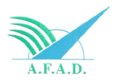
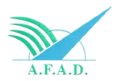
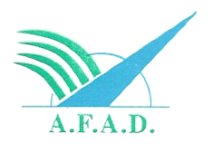

Mali Vegetation Degradation & Biomass Conservation Dashboard
Community-Managed Environmental Restoration for Tominian & San Districts

Community-Managed Environmental Restoration for Tominian & San Districts
Critical Finding: Multiple interconnected factors drive 100% vegetation degradation: deforestation for fuel, overgrazing by livestock, agricultural expansion, wildfires, and climate change impacts.
Focus Areas: Tominian and San districts with priority on severely degraded grasslands, savannas, and shrublands requiring immediate community-led restoration.
Context: Farming dominates 50% of area with extensive smallholder agriculture (1-5 ha farms). Grazing pressure exceeds carrying capacity, contributing to degradation.
Endangered Species: Medium-high plant diversity includes threatened Shea trees, Faidherbia albida. Low wildlife diversity with declining partridges, rabbits, and bees.
All interventions designed for local applicability, cost efficiency, community agreement, operation, and management:
Community-Led: Native species nurseries (Shea, Faidherbia albida) managed by local groups. Traditional planting methods combined with simple protection techniques.
Cost-effective, uses local seeds, builds on traditional knowledgeLocal Production: Locally manufactured stoves using available materials. Training local artisans for production, repair, and maintenance.
Reduces fuelwood demand, creates local jobs, fits cooking practicesCommunity Protection: Local agreements to protect degraded areas. Community-managed grazing rotations and natural recovery zones.
Low-cost, builds on natural processes, community ownershipTraditional + Modern: Crop rotation with local varieties (Millet, Fonio, Sorghum). Agroforestry using native trees. Community seed banks.
Improves soil fertility, increases yields, preserves local varietiesCommunity Agreements: Training on responsible fuelwood collection. Community-managed harvesting quotas and rotation systems.
Balances needs with conservation, community enforcementGrazing Committees: Community-led stocking rate management. Rotational grazing systems. Improved animal health to reduce herd sizes.
Reduces overgrazing, maintains livelihoods, community-controlled